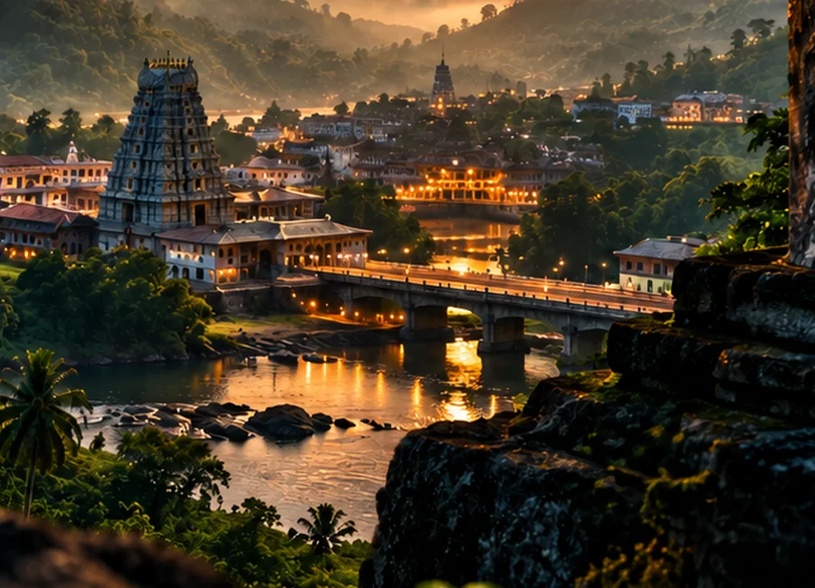
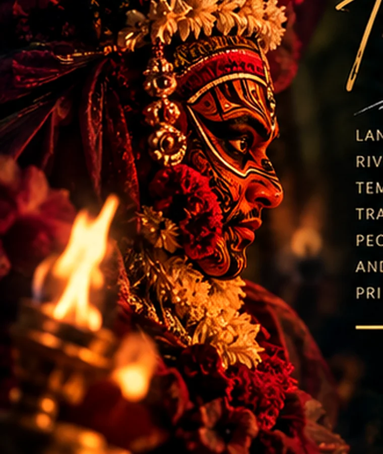

● SUBRAHMANYA · KUKKE REGION · KARNATAKA
YUVAKESARI
YOUTH CLUB
ಧರ್ಮೋ ರಕ್ಷಿತ ರಕ್ಷಿತಃ 🚩
Together for a Better Tomorrow
AHWIN YPRESIDENT · YUVAKESARI YOUTH CLUB · SUBRAHMANYA
01 / TULUNADU GLIMPSE
Nature. Culture.
Identity.
Subrahmanya sits within a landscape of Western Ghats greenery, temple-town heritage, rivers, local food culture and community traditions.



02 / LEADERSHIP
People behind the movement.
Leadership profiles and photos are managed from the admin panel.
03 / LIVE BOARD
Updates & announcements.
Latest approved news from Yuvakesari Youth Club.
04 / GALLERY
Moments that move us.
Community photos, programmes and youth activities.
05 / JOIN YYC
Your role starts here.
Register as a member. Applications are reviewed by the admin team; approved members receive a unique role number and a digital membership card.
✓ Member application✓ Photo positioning✓ Digital card